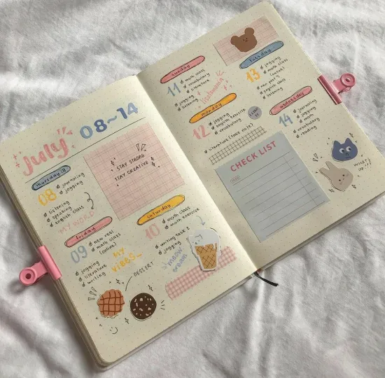

Time management is something that doesn’t come naturally to most people, it’s something we need to learn and teach ourselves. But how? Don’t worry, if you don’t know where to start, I’m here to help you!
- Agenda
- To do list
- Determine Whether You’re A Night Owl Or A Rooster
- It’s Okay To Take Breaks
- Limit Distractions
- Plan Ahead
We’ve all been there, logging into blackboard just to see you’ve missed yet again another quiz. The first assignment or two isn’t such a big deal, but the missed assignments start to pile up and your grade starts to suffer. And the frustration starts to kick in that you’re doing bad in school, not because you don’t know the material, but because you didn’t know what was due when. This was something a lot of people struggle with, even myself.
Iv’e found that the best way to keep everything organized is by having and actually using an agenda. When it comes to school, look at all your syllabi and write all due dates and assignments for the entire semester, this way you’ll have no surprise assignments! This will help you keep everything organized and get you one step closer to being better at time management.
To do lists
- I know how it feels to have a busy day, and I don’t mean full of fun plans, I’m talking a day full of homework, studying, and errands. It’s not something we wake up and look forward to, so how do we make these slow painful days more bearable? To do lists! To do lists are one of the key steps for improving your time management skills. I know, it doesn’t sound fun, but hear me out first!
- Like we talked about before, writing everything down will give you some type of control over this hectic day. For me writing everything down eases my stress because now I can see what I need to do and when I need it done by. At first your long list may be intimidating, but organizing it helps you realize it’s not impossible to do it all.
-
By listing the tasks that you intend to get done in order to accomplish you overall goal of finishing
everything give you a sense of accomplishment. Oh and we can’t ignore the satisfaction you get by crossing
those suckers out!
Why is this so important? While writing a line through a task doesn’t seem so important, you’d be surprised at how affective it is. - This action, while yes, is satisfying will also give you a sense of achievement. To be proud of yourself, which is great motivation to keep you moving forward. Once you cross off one thing from your to do list, you’ll find yourself longing to keep writing lines through your tasks!